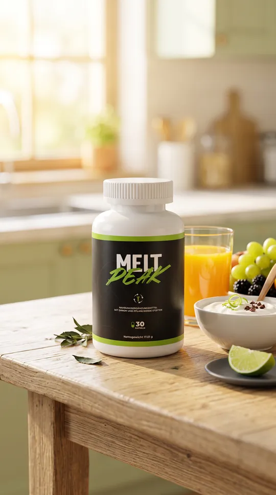
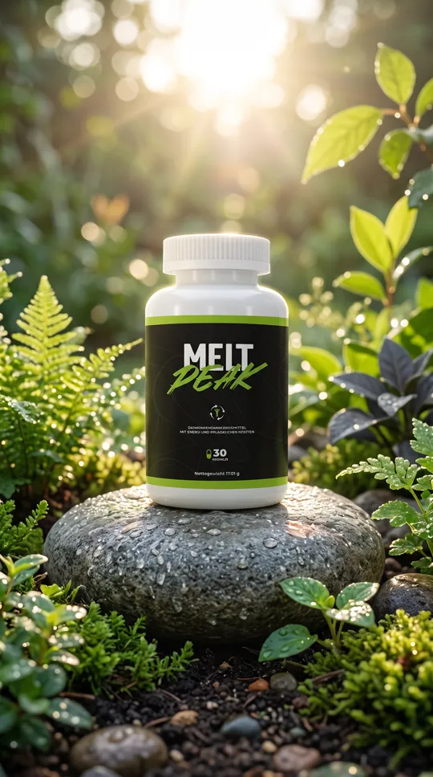
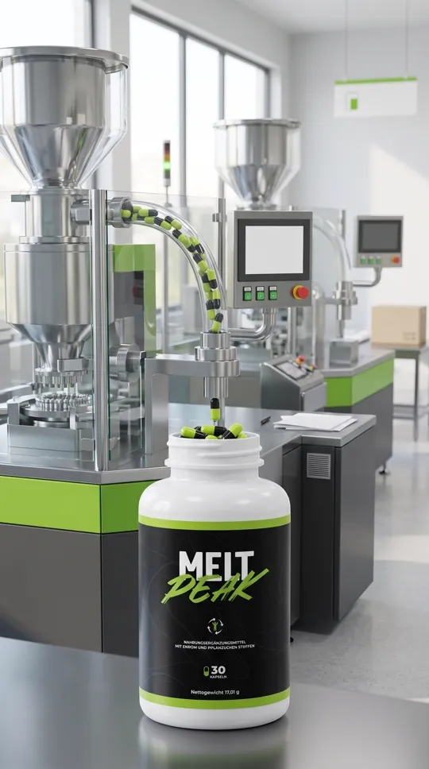
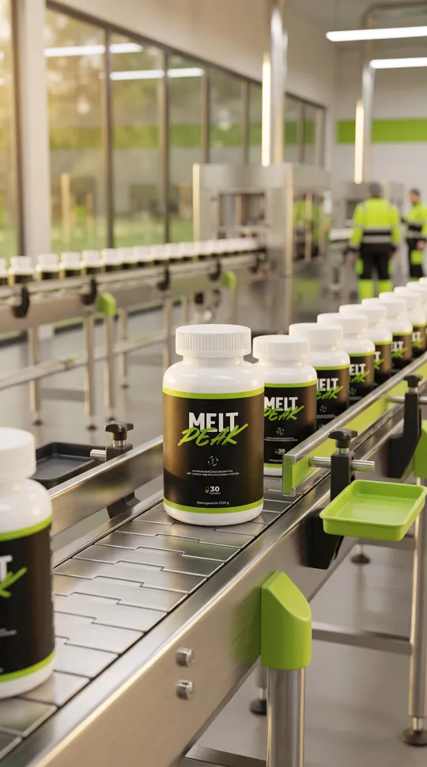
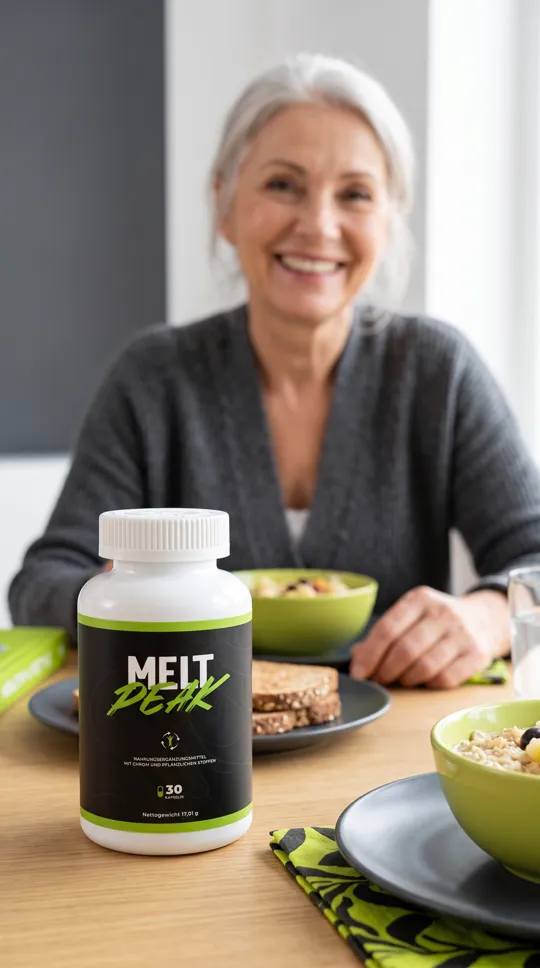
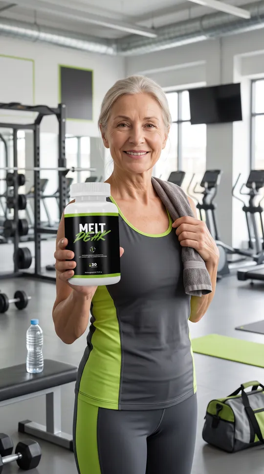

Mockup
Seu pote em qualquer cena.
Suba uma foto do frasco. Saem cenas do produto na mesa, na fábrica ou na mão de alguém, com o rótulo do jeito que ele é. As melhores viram vídeo.


vídeo


vídeo


vídeo